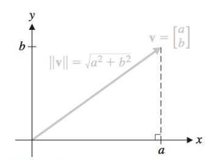
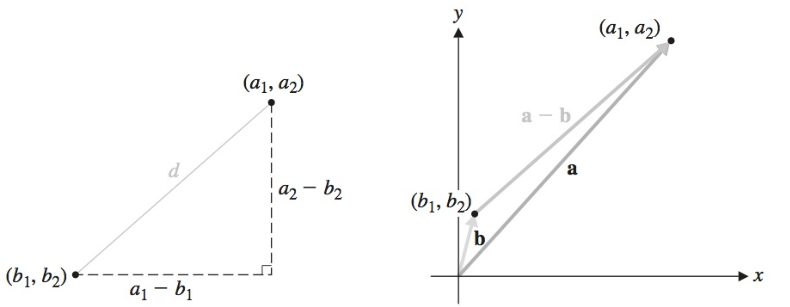
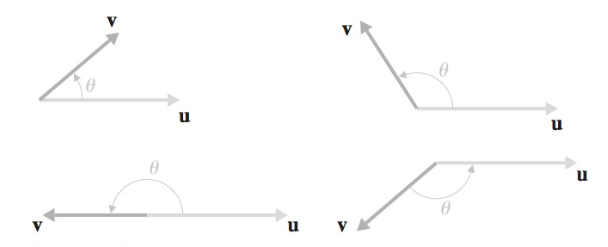
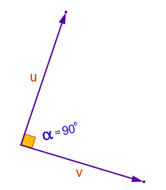

Comprimento e ângulo: o produto escalar
Conteúdo da aula
- O Produto Escalar
- Comprimento de um vetor
- Vetor unitário:
- Distância
- Ângulo entre dois vetores
- Vetores ortogonais
O Produto Escalar
O Produto Escalar (produto interno) é uma operação matemática entre dois vetores em um espaço euclidiano que resulta em um escalar.
\[ \vec{u} = \begin{pmatrix} u_1 \\ u_2 \\ \vdots \\ u_n \end{pmatrix}; \vec{v} = \begin{pmatrix} v_1 \\ v_2 \\ \vdots \\ v_n \end{pmatrix} \]
\[\vec{u} \cdot \vec{v} = u_1 v_1 + u_2 v_2 + \ldots + u_n v_n\]
O Produto Escalar
Propriedades
Sejam \(\vec{u}\), \(\vec{v}\) e \(\vec{w}\) vetores em \(\mathbb{R}^n\), e \(k\) um escalar. Então:
| Propriedade | Descrição | |
|---|---|---|
| 1 | \(\vec{u} \cdot \vec{v} = \vec{v} \cdot \vec{u}\) | Comutatividade |
| 2 | \(\vec{u} \cdot (\vec{v} + \vec{w}) = \vec{u} \cdot \vec{v} + \vec{u} \cdot \vec{w}\) | Distributividade |
| 3 | \(k(\vec{u}) \cdot \vec{v} = k(\vec{u} \cdot \vec{v})\) | Distributividade |
| 4 | \(\vec{u} \cdot \vec{u} \ge 0\) e \(\vec{u} \cdot \vec{u} = 0\) se e somente se \(\vec{u} = 0\) |
O Produto Escalar
Exemplo
\[ \vec{u} = \begin{pmatrix} 1 \\ 2 \\ -3 \end{pmatrix}; \vec{v} = \begin{pmatrix} -3 \\ 5 \\ 2 \end{pmatrix} \]
\[\vec{u} \cdot \vec{v} = 1 \times (-3) + 2 \times 5 + (-3) \times 2 = -3 + 10 - 6 = 1\]
Comprimento de um vetor
O comprimento de um vetor (magnitude ou norma), é uma medida da extensão do vetor no espaço. Para um vetor \(\vec{v} = (v_1, v_2, \ldots, v_n)\) em um espaço euclidiano n-dimensional, o comprimento é:
\[ \|\vec{v}\| = \sqrt{\vec{v} \cdot \vec{v}} = \sqrt{v_1^2 + v_2^2 + \cdots + v_n^2} \]

Comprimento de um vetor
Propriedades
Seja \(\vec{u}\) um vetor em \(\mathbb{R}^n\), e \(k\) um escalar. Então:
| Propriedade | |
|---|---|
| 1 | \(\|\vec{u}\| = 0\) se e somente se \(\vec{u} = 0\) |
| 2 | \(\|k(\vec{u})\| = |k| \|\vec{u}\|\) |
Comprimento de um vetor
Exemplo
\[ \vec{u} = \begin{pmatrix} 1 \\ 2 \\ -3 \end{pmatrix}; \vec{v} = \begin{pmatrix} -3 \\ 5 \\ 2 \end{pmatrix} \]
\(\|\vec{u}\| = \sqrt{\vec{u} \cdot \vec{u}} = \sqrt{u_1^2 + u_2^2 + u_3^2}\) \(\|\vec{u}\| = \sqrt{1^2 + 2^2 + (-3)^2} = \sqrt{1 + 4 + 9} = \sqrt{14} \approx 3.742\)
\(\|\vec{v}\| = \sqrt{\vec{v} \cdot \vec{v}} = \sqrt{v_1^2 + v_2^2 + v_3^2}\) \(\|\vec{v}\| = \sqrt{(-3)^2 + 5^2 + 2^2} = \sqrt{9 + 25 + 4} = \sqrt{38} \approx 6.164\)
Vetor unitário: normalização
Um vetor é um vetor de comprimento 1 é chamado vetor unitário. \(\vec{v}\) é unitário se \(\|\vec{v}|\ = 1\)
Normalização de um vetor
Dado qualquer vetor não nulo \(\vec{v}\), podemos sempre encontrar um vetor unitário de mesmo sentido que \(\vec{v}\) dividindo \(\vec{v}\) por seu próprio comprimento (ou, equivalentemente, multiplicando por \(\frac{1}{\|\vec{v}\|}\)).
Portanto o vetor \(\vec{u}\) será unitário se:
\(\vec{u} = \left(\frac{1}{\|\vec{v}\|}\right)\vec{v}\)
pois:
\[ \|\vec{u}\| = \left\|\left(\frac{1}{\|\vec{v}\|}\right)\vec{v}\right\| = \left| \frac{1}{\|\vec{v}\|} \right| \|\vec{v}\| = \left(\frac{1}{\|\vec{v}\|}\right)\|\vec{v}\| = 1 \]
\(\vec{u}\) possui o mesmo sentido que \(\vec{v}\), pois \(\frac{1}{\|\vec{v}\|}\) é um número positivo.
Distância
A distância (ou distância euclideana) entre dois vetores \(\vec{u} = (u_1, u_2, \ldots, u_n)\) e \(\vec{v} = (v_1, v_2, \ldots, v_n)\) é uma medida da separação entre os dois pontos finais desses vetores no espaço n-dimensional, calculada:
\[ d(\vec{u}, \vec{v}) = \|\vec{u} - \vec{v}\| = \sqrt{(u_1 - v_1)^2 + (u_2 - v_2)^2 + \cdots + (u_n - v_n)^2} \]

Distância
Exemplo
\[ \vec{u} = \begin{pmatrix} \sqrt{2} \\ 1 \\ -1 \end{pmatrix}; \vec{v} = \begin{pmatrix} 0 \\ 2 \\ -2 \end{pmatrix} \]
\[ d(\vec{u}, \vec{v}) = \|\vec{u} - \vec{v}\| = \sqrt{(\sqrt{2})^2 + (-1)^2 + 1^2} = \sqrt{4} = 2 \]
Ângulo entre dois vetores
O Produto escalar pod ser utilizado para determinar o ângulo \(\theta\) entre dois vetores não mulos \(\vec{u}\) e \(\vec{v}\) por meio da expressão.
\[ \cos(\theta) = \frac{\vec{u} \cdot \vec{v}}{\|\vec{u}\|\|\vec{v}\|} \]

Ângulo entre dois vetores
Considere a expressão retirada da Lei dos Cossenos: \[ \|\vec{u} - \vec{v}\|^2 = \|\vec{u}\|^2 + \|\vec{v}\|^2 - 2\|\vec{u}\|\|\vec{v}\|\cos(\theta) \]
Expandindo \(\|\vec{u} - \vec{v}\|^2\) e utilizando a definição do produto escalar, podemos escrever:
\[ \|\vec{u} - \vec{v}\|^2 = (\vec{u} - \vec{v}) \cdot (\vec{u} - \vec{v}) = \vec{u} \cdot \vec{u} - 2\vec{u} \cdot \vec{v} + \vec{v} \cdot \vec{v} \]
Como \(\vec{u} \cdot \vec{u} = \|\vec{u}\|^2\) e \(\vec{v} \cdot \vec{v} = \|\vec{v}\|^2\), então:
\[ \|\vec{u} - \vec{v}\|^2 = \|\vec{u}\|^2 + \|\vec{v}\|^2 - 2\vec{u} \cdot \vec{v} \]
Comparando esta expressão com a expressão original da Lei dos Cossenos, temos:
\[ \|\vec{u}\|^2 + \|\vec{v}\|^2 - 2\|\vec{u}\|\|\vec{v}\|\cos(\theta) = \|\vec{u}\|^2 + \|\vec{v}\|^2 - 2\vec{u} \cdot \vec{v} \]
Simplificando, obtemos:
\[ - 2\|\vec{u}\|\|\vec{v}\|\cos(\theta) = - 2\vec{u} \cdot \vec{v} \]
Dividindo ambos os lados por \(-2\|\vec{u}\|\|\vec{v}\|\):
\[ \cos(\theta) = \frac{\vec{u} \cdot \vec{v}}{\|\vec{u}\|\|\vec{v}\|} \]
Vetores ortogonais
Dois vetores \(\vec{u}\) e \(\vec{v}\) são ortogonais entre si se \(\vec{u} \cdot \vec{v} = 0\). Dois vetores não nulos ortogonais têm ângulo \(\theta\) entre si \(\theta = 90^o\) (\(\theta = \frac{\pi}{2}\) radianos)

Vetores ortogonais
Exemplo: Considere os vetores \(\vec{u} = (2, 3)\) e \(\vec{v} = (-3, 2)\) em \(\mathbb{R}^2\). Para verificar se são ortogonais:
- Calcular o produto escalar \(\vec{u} \cdot \vec{v}\):
\[ \vec{u} \cdot \vec{v} = 2 \cdot (-3) + 3 \cdot 2 = -6 + 6 = 0 \]
- Calcular as normas \(\|\vec{u}\|\) e \(\|\vec{v}\|\):
\[ \|\vec{u}\| = \sqrt{2^2 + 3^2} = \sqrt{4 + 9} = \sqrt{13} \]
\[ \|\vec{v}\| = \sqrt{(-3)^2 + 2^2} = \sqrt{9 + 4} = \sqrt{13} \]
- Calcular \(\cos(\theta)\):
\[ \cos(\theta) = \frac{\vec{u} \cdot \vec{v}}{\|\vec{u}\|\|\vec{v}\|} = \frac{0}{\sqrt{13} \cdot \sqrt{13}} = 0 \]
- Calcular \(\theta\):
\[ \theta = \cos^{-1}(0) = \frac{\pi}{2} \]